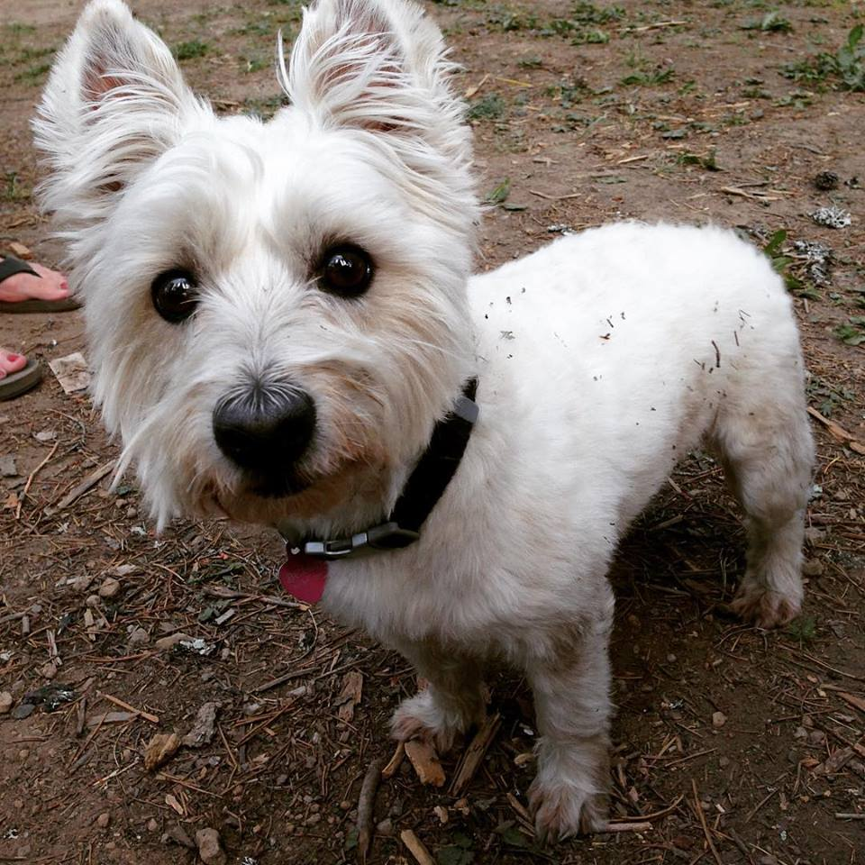

After graduating from the University of Oregon with a bachelor's degree with a major in French and a minor in History I got a job working as an administrator for a small company in Bellevue, Washington. I bounced around from job to job and quickly realized that none of these jobs brought me any satisfaction. I've never been the type of person who shys away from a challenge and I love working hard and seeing my end result. I decided to start using my creative side and started a small photography business. I soon got my first clients and had a small portfolio. It wasn't long after that that I wanted to build a website for my growing business. I knew that I didn't want a cookie cutter site and I wanted to really find out how to put together something of my own. I soon found CodeAcademy and started learning some basic HTML and CSS. Not only did I enjoy learning and practicing but I soon found myself spending a lot of time practicing code and wanting to learn more. At this point I realized that this was the path that I wanted to take. It's the perfect career path for me. I'm a person that loves a challenge and loves to learn, website devleopment is a field that is consistantly changing and evolving so, it's the perfect career for me. Please stay tuned for more of my work as I continue to add to my skillset and portfolio.
